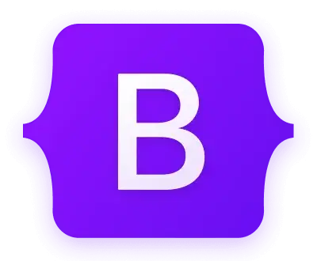
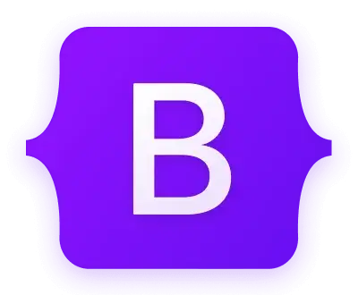

Maximiliano Soriano
Software Developer
Tec. Analista de Sistemas
Software Developer Full Stack
Maximiliano Soriano
¡Bienvenid@! En este portfolio encontrarás una muestra de mis proyectos personales, mi formación académica y mi experiencia profesional en IT. Me apasiona seguir aprendiendo y desarrollar soluciones tecnológicas que aporten valor.
 

Sobre mí
Hola, me llamo Maximiliano Soriano y soy Desarrollador Web Full Stack en búsqueda de mi primera experiencia profesional en relación de dependencia en IT. Cuento con formación y experiencia adquirida en proyectos propios y prácticas profesionales en empresas del sector, utilizando tecnologías como Java (Spring Boot), React, PHP, Laravel, MySQL, HTML, CSS, JavaScript y Bootstrap. Me destaco por ser responsable, puntual y proactivo, con gran motivación por aprender, capacidad para resolver problemas, trabajar en equipo y adaptarme rápidamente a nuevos entornos y herramientas.
Experiencia
Programador Informático
Diciembre 2024 - Junio 2025
Remoto (San Salvador, El Salvador) consiti.com
Desarrollé una API REST de datos climáticos con Java y Spring Boot, utilizando MySQL como base de datos. Además, implementé un chat inteligente en Node.js que interactúa con la API Gemini de Google, almacenando las conversaciones en MongoDB. También desarrollé el frontend con React para interfaces dinámicas. Manejo de llamadas HTTP, gestión de estados y consumo de APIs externas.
Desarrollador Trainee
Abril 2022 - Noviembre 2022
Salta, Argentina silentiumapps.com
Desarrollé interfaces móviles con Flutter y trabajé de forma colaborativa con GitHub. Aprendí y apliqué C#, utilicé MySQL como base de datos y participé en proyectos guiados por metodologías ágiles.
Auxiliar de Depósito
Enero 2025 - Mayo 2025
Salta, Argentina Par Equipamentos
Recepción, control y clasificación de mercadería. Etiquetado y ubicación de productos. Preparación de pedidos, control de stock y mantenimiento del orden en el depósito. Manipulación segura de productos frágiles.
Atención al Cliente
Noviembre 2023 - Marzo 2024
Salta, Argentina Tienda Balbi
Atención al cliente, remarcar de precio, control de stock y reposición del mismo.
Cajero
Enero 2021 - Abril 2021
Salta, Argentina Super Vea
Recepción, entrega y custodiar dinero en efectivo, cobros con tarjeta de crédito, debito y extracciones del cliente, a fin de lograr la recaudación de ingresos de la institución y la cancelación de pagos que correspondan a través de caja.
Profe. de Excel
Octubre 2020 - Diciembre 2020
Salta, Argentina Concesionaria Jeep
Enseñe a resolver problemas de optimización, realizar análisis estadísticos, preparar diagramas recopilar información y crear listas, etc.
Proyectos
Back End
🐾 Patitas Sin Hogar
API REST desarrollada con Java 21 y Spring Boot 3 para gestionar un sistema de adopción de mascotas. Permite registrar y autenticar usuarios con JWT, publicar mascotas en adopción y gestionar solicitudes de adopción, diferenciando entre usuarios administradores y comunes. Cuenta con documentación automática mediante Swagger/OpenAPI.
JAVA
SPRING BOOT
MySQL
FullStack
🦷 Clínica Odontologica
Proyecto full stack desarrollado en Digital House como parte de la formación Certified Tech Developer (becado) para gestionar turnos odontológicos. Backend en Java 17 y Spring Boot con base de datos MySQL, y frontend en HTML, CSS, JavaScript y Bootstrap, con diseño moderno y responsivo. La integración entre frontend y backend se realiza mediante llamadas HTTP para una gestión ágil de turnos. Refleja habilidades en desarrollo full stack, diseño adaptable y consumo de APIs REST.
JAVA
MySQL
HTML
CSS
JS
Front End
🦷 HealthDent
Proyecto responsive desarrollado en Digital House como parte de la formación Certified Tech Developer (becado). Aplicación web frontend enfocada en salud dental, que muestra dentistas desde una API, detalles, formulario de contacto y gestión de favoritos. Incluye modo claro y oscuro, con diseño moderno, accesible y adaptable a desktop, tablet y dispositivos móviles.
REACT JS
HTML
CSS
BOOTSTRAP
Front End
🔥 Movie Fire
Plataforma web responsive para gestión y visualización de películas y series, desarrollada como trabajo práctico en el Bootcamp Full Stack de Rolling Code School (beca). Incluye registro e inicio de sesión, panel de administración, carruseles de contenido, modales con detalles y trailers, todo con diseño moderno y adaptable a distintos dispositivos.
HTML
CSS
BOOTSTRAP
JS
Front End
📝 Agenda de Tareas
Aplicación web responsive para gestionar tareas, con funciones de agregar, editar, marcar como realizadas o eliminar. Guarda la información en el navegador para mantener las tareas al recargar la página, con una interfaz intuitiva y alertas interactivas.
HTML
CSS
JS
BOOTSTRAP
Front End
🐾 Veterinaria Web
Página web responsive para una veterinaria, con diseño adaptable a distintos dispositivos. Incluye carrusel principal, menú de navegación móvil, secciones de servicios, marcas, consejos para mascotas, publicidad destacada y formulario de contacto con mapa integrado. Cuenta también con un modal interactivo para mostrar información adicional de forma dinámica.
HTML
CSS
SASS

Front End
🐾 Patitas sin hogar
Plataforma web responsive para adopción y publicación de mascotas perdidas, desarrollada como proyecto personal. Incluye galería de animales, gestión de usuarios, secciones informativas y diseño atractivo adaptable a distintos dispositivos.
HTML
CSS
BOOTSTRAP
JS
Front End
🧉 MootMate
Proyecto realizado como trabajo práctico en la Tecnicatura Universitaria en Desarrollo de Software (UPATECO). Aplicación web responsive que simula una plataforma colaborativa tipo Slack, con chats, reuniones online y gestión de usuarios y canales. El nombre y logo se inspiran en el mate, símbolo de encuentro y comunicación, reflejando la esencia del proyecto.
HTML
CSS
JS
Front End
🔮 Rolling Glass
Página web responsive para ecommerce de vidrios para el hogar, desarrollada como trabajo práctico en el Bootcamp Full Stack de Rolling Code School (beca). Incluye secciones de productos destacados, tienda, información institucional, formulario de suscripción y login, con un diseño moderno y adaptable a distintos dispositivos.
HTML
CSS
JS
BOOTSTRAP
Front End
🍽️ R-Parrilla
Página web responsive para un restaurante especializado en parrilladas, desarrollada como trabajo práctico en el Bootcamp Full Stack de Rolling Code School (beca). Incluye secciones informativas, presentación del menú, formulario de contacto y equipo, con un diseño moderno y adaptable a distintos dispositivos.
HTML
CSS
Front End
🐾 PetShop
Página web responsive desarrollada en el curso Argentina Programa, dedicada a la venta de productos para mascotas. Incluye secciones de productos destacados, información de la empresa y presentación del equipo, con un diseño moderno y adaptable a distintos dispositivos.
HTML
CSS
JS
Front End
🏅 Sportit
Proyecto responsive desarrollado en Digital House como parte de la formación Certified Tech Developer (becado). Página web frontend para una plataforma deportiva con secciones de noticias en vivo, servicios, perfiles destacados y formulario de contacto. Diseño moderno y totalmente adaptable a dispositivos desktop, tablet y móvil.
HTML
CSS
Front End
🐾 Pet Shop
Proyecto responsive desarrollado en Digital House como parte de la formación Certified Tech Developer (becado). Consiste en una página web frontend para una tienda de mascotas, con secciones de productos destacados, formularios de contacto y suscripción, y un diseño moderno adaptable a desktop, tablet y dispositivos móviles.
HTML
CSS
Front End
🦸♂️ Cards de Superhéroes
Proyecto responsive desarrollado en Digital House como parte de la formación en Certified Tech Developer (becado). Muestra un conjunto de tarjetas con información e imágenes de superhéroes, utilizando estilos personalizados y una estructura adaptable a distintos dispositivos.
HTML
CSS
FullStack
Fundación
Sistema web para la gestión integral de cursos, estudiantes y personal en instituciones educativas. Permite administrar cursos con modalidades presencial y virtual, gestionar inscripciones, asignar docentes a comisiones y mantener la información institucional actualizada. Desarrollado como parte de un curso becado en Neoris junto a la Universidad Tecnológica Nacional (UTN), utilizando Laravel y Bootstrap, con un diseño responsive para una experiencia óptima en distintos dispositivos.
LARAVEL
BOOTSTRAP
MySQL

FullStack
Restaurante
Proyecto desarrollado como parte de mi formación académica en el Instituto del Milagro, que simula una aplicación web de gestión integral para restaurantes. Permite administrar pedidos, caja, inventario, menú y usuarios, además de incluir carrito de compras, control de proveedores, envío de correos y generación de facturas en PDF. Siguiendo un enfoque responsive para garantizar una correcta visualización en distintos dispositivos.
HTML
CSS
JS
AJAX
PHP
MySQL
FullStack
Tienda AS Roma
Proyecto desarrollado como parte de mi formación académica en el Instituto del Milagro, que simula un sistema de ventas online especializado en productos deportivos. Incluye navegación por categorías, visualización de productos con imágenes, gestión de carrito de compras y sistema de login básico. Siguiendo un enfoque responsive para una correcta visualización en distintos dispositivos.
HTML
CSS
JS
PHP
MySQL
FullStack
Gestión de Personas
Proyecto desarrollado como parte de mi formación académica en el Instituto del Milagro, que consiste en una aplicación web para gestionar usuarios asociados a provincias argentinas. Incluye registro de usuarios, listado y manejo de contraseñas, con un diseño responsive y gestión básica de relaciones en base de datos.
BOOTSTRAP
PHP
MySQL